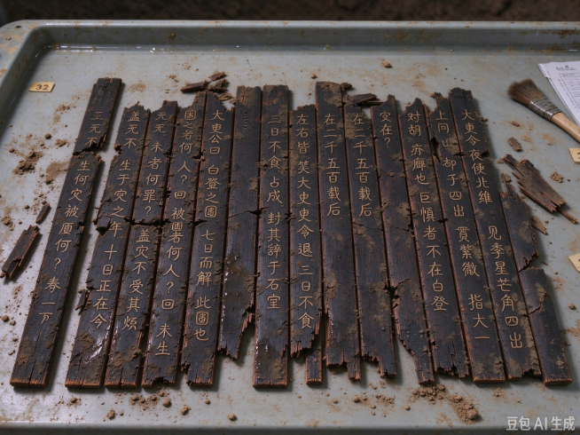

本局概况
国家考古文物局是国家主管考古发掘与文物保护工作的职能机构，负责全国重点文物保护单位的调查、发掘、研究与展示工作。
我局现设有田野考古处、文物保护处、陈列展览处、资料信息中心等部门，并在全国设立 23 个考古工作站。多年来，我局在史前聚落、商周方国、秦汉简牍等领域取得了举世瞩目的成果。
田野考古
规范发掘流程，抢救性保护与主动性发掘并重，守护沉睡地下的历史。
文物保护
运用传统修复技艺与现代科技手段，延长文物的“生命”。
陈列展览
让文物走出库房，让更多人看见历史、读懂中国。
学术研究
整理研究出土文献，推动简牍学、考古学向前发展。
最新动态
凼地村古墓发掘取得重要收获1997.10.09
文物保护修复技术培训班圆满结业1997.09.20
图片 · 1997 年考古重大发现
本报讯 一九九七年十月九日，我局考古队在凼地村一处基建工地范围内，发现古代墓葬一座。经初步勘探与研究，该墓葬年代约为公元前 200 年左右。
墓葬形制规整，随葬品较为丰富。尤为重要的是，墓中出土简牍文书约二十件。简牍字迹清晰，内容涉及行政往来、簿籍登记等，对研究当时的文书制度与社会生活具有重要价值。
据专家阅读，太史令夜候北维，见孛星芒角四出，贯紫微，指太一。上问："胡可却乎？"对曰："胡，疥癣也。臣所惧者，不在白登。"
"安在？"
"在二千五百载后。"
左右皆笑。太史令退，三日不食，占成，封其辞于石室。
... ...
太史公曰：白登之围，七日而解；此围也，二千五百载而未解。围之者何人？曰：取者。被围者何人？曰：未生。未生者何罪？曰：无罪，而代受其燠。盖灾不生于灾之年，生于取之日——日正在今。
目前，出土简牍已运回我局文物保护处进行清理、拍照与脱水保护处理，后续研究将陆续展开。

公益
“文物进校园 · 历史进社区”是我局长期开展的社会公益活动。
我局每年组织巡回展览、专题讲座与文物保护知识普及活动，走进中小学校、社区与乡村，让更多人了解脚下这片土地的历史，共同参与文化遗产的保护。
文物图片进校园
向学校赠送高品质文物图片与图录，支持历史课堂。
考古工地开放日
定期向公众开放发掘现场，近距离感受考古工作。